Warehouse, inhouse, transporte e readiness para indústrias de todo o Brasil, com WMS próprio na nuvem e estrutura nos EUA e na Argentina.
Modelo de página inicial com o conteúdo do site atual. Desenvolvido por halo company